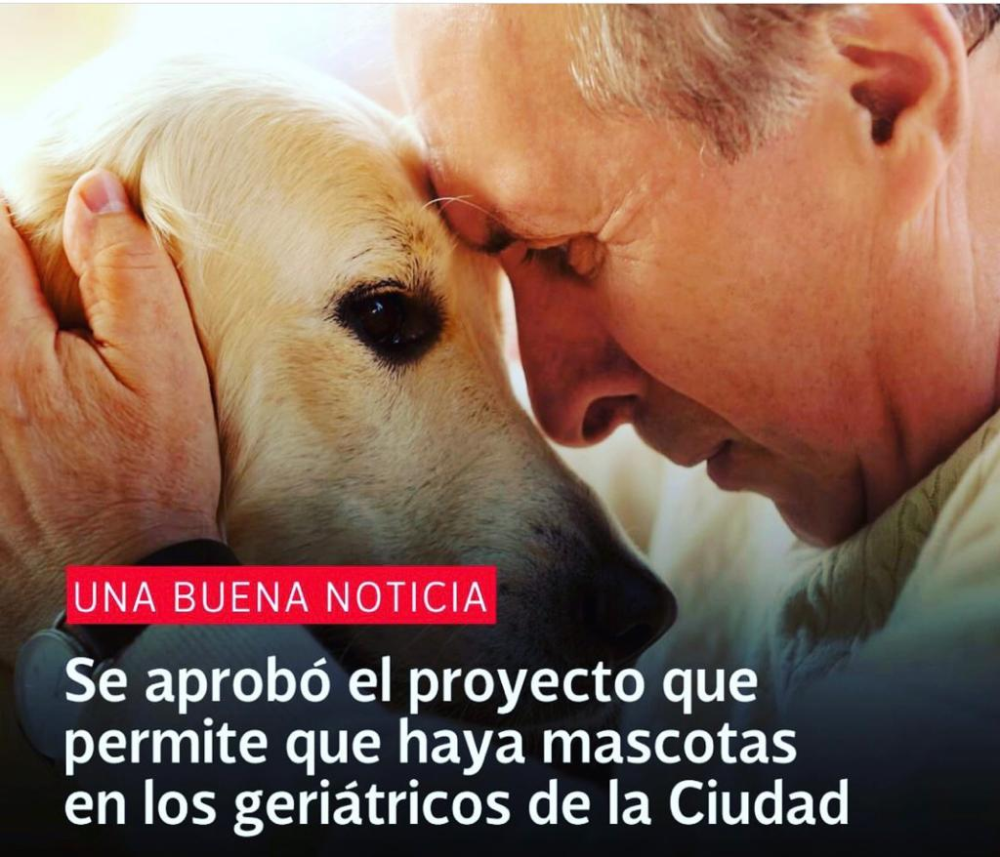

Testimonios y algo más ...
Para escuchar
Testimonios que inspiran
Para ver
Buenas noticias
La Legislatura porteña aprobó la ley que permite que haya mascotas en los geriátricos. El proyecto aprobado por unanimidad este jueves también indica que se podrán hacer terapias asistidas con los animales. A su vez, se autorizó la adopción de una mascota para el acompañamiento de las personas que viven en los geriátricos. Esta medida solo podrá llevarse a cabo en los establecimientos que tengan “aire libre suficiente de acuerdo a las dimensiones y a la cantidad de alojados y un recinto apartado para el animal”.
Para seguir leyendo
Podríamos decir que entre los animales y los humanos encontramos a las mascotas: esos seres que comparten nuestras rutinas y costumbres "humanas" con nuestras familias. Erica Fudge analiza esta relación fundamental desde una perspectiva teórica, alejándose del enfoque personal, el más usual en la bibliografía sobre mascotas.En el campo de la filosofía y de la historia, los animales poseen un rol central, ya que siempre han compartido la escena con los seres humanos que, de hecho, recortan su "humanidad" a contraluz de la "animalidad" de aquellos. En esta senda, Pets acomete una reflexión acerca del sentido de la humanidad: ¿qué nos hace humanos, sabiendo -como lo hacemos- que somos animales? "Si no entendemos a los animales -plantea Fudge- difícilmente entendamos lo que somos los humanos. Por lo tanto, hablar de lo humano implica necesariamente hablar de lo animal." Lo cierto es que excluimos a los animales para constituirnos, para reforzar nuestro estatuto "diferente" que, relativiza Fudge, no es tal. Además, el libro destaca la importancia afectiva de las mascotas en la sociedad occidental moderna.Desde este marco, Pets analiza la conducta de los animales hogareños y el vínculo que establecemos con ellos como disparador para una reflexión sobre qué nos hace humanos, reformulando en el camino zonas importantes de la historia y la filosofía occidental. "Es posible que, fijándonos en las mascotas, descubramos algo más acerca de lo que creemos ser.".